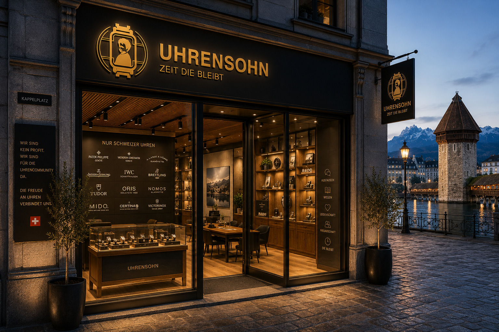

Uhrensohn ist mehr als ein Onlineshop für Uhren. Wir stehen für Leidenschaft, Qualität und eine Community, die die Faszination für Zeitmesser teilt. Ob erste Uhr, stilvoller Alltagsbegleiter oder besonderes Sammlerstück: Bei uns finden Uhrenliebhaberinnen und Uhrenliebhaber sorgfältig ausgewählte Modelle für unterschiedliche Ansprüche, Stilrichtungen und Budgets. Dabei geht es uns nicht nur um den Verkauf, sondern um ein Einkaufserlebnis, das persönlich, ehrlich und inspirierend ist. Unsere Kundinnen und Kunden profitieren von zuverlässigem Service, langfristiger Betreuung und einem Umfeld, in dem die Freude an Uhren im Mittelpunkt steht. Mit Uhrensohn+ schaffen wir zusätzlich Raum für exklusive Vorteile, besondere Erlebnisse und den Austausch innerhalb unserer Community. Wir möchten Menschen zusammenbringen, die Uhren nicht nur tragen, sondern schätzen. Uhrensohn verbindet hochwertige Zeitmesser mit persönlichem Service und echter Begeisterung — für alle, die Uhren lieben. Uhrensohn - von Uhrensöhnen, für Uhrensöhne (und Uhrentöchter ;)
Entkomme den Fälschungen!